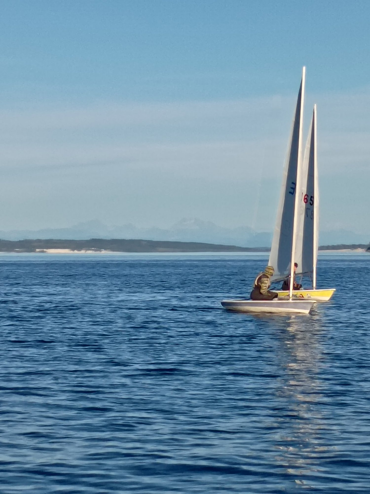
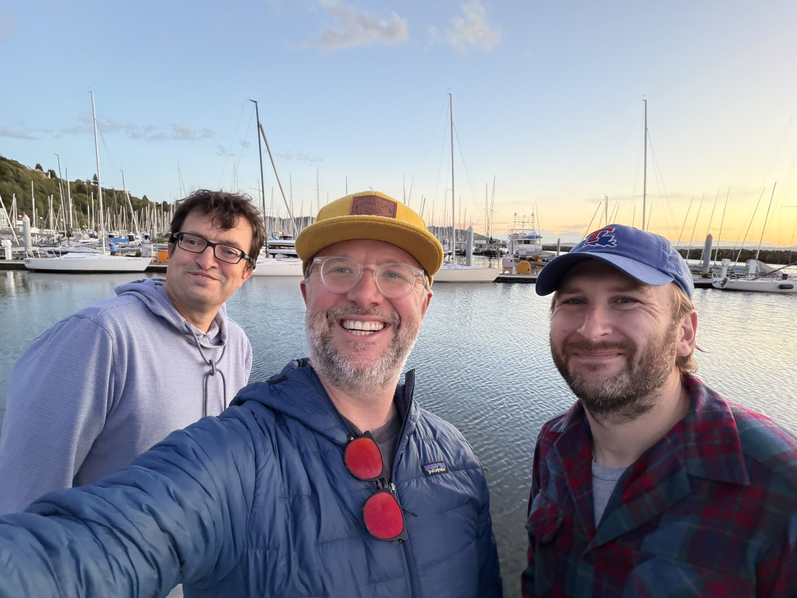
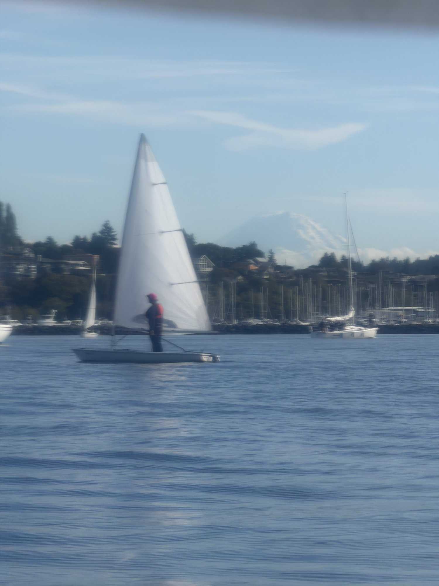
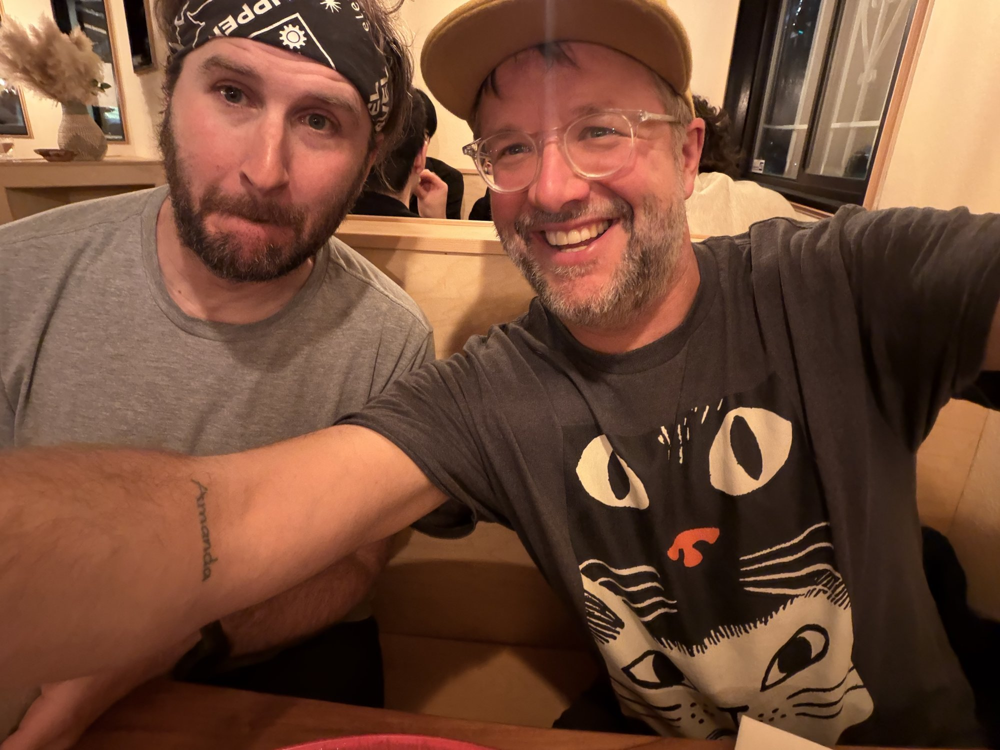

CYC didn't publish results for the ILCA 7 fleet at last weekend's PSSC regatta in Seattle, but if they had, they'd show three boats, all from PTSA, that DNF'd the one race on Saturday and DNS'd the whole day on Sunday. One could read that and think the weekend was a bust, and they would be wrong!
TL;DR
Saturday was super light. We learned a lot and retired from the only race that started to avoid a very long and painful scull back to the dock.
Sunday was blowing hard. It turned into a great practice session in big wind and big waves, but as a fleet we decided not to race in those conditions.
Overall we learned a ton, had a great time, and felt like we really pushed forward the ILCA momentum.
Below is the play-by-play.
Building up to it
This trip didn't start Friday afternoon. It started several weeks earlier, when we made a point of keeping the Monday night practice sessions going and getting as much time in the Lasers as we could manage. Every week the rigging got faster, the tacks got cleaner, and the idea of hauling three boats to Seattle to race against people who actually know what they're doing started to feel less like a dare and more like a plan.



The week leading up to the event was full prep mode, which for me included learning a lot about trailer maintenance as I replaced the bearings on my trailer to ensure a smooth trip.
Thursday night the three of us spent an hour in the parking lot at Boat Haven figuring out how to stack three Lasers on my truck. The solution involved more ratchet straps than I care to admit, but we did it. Friday afternoon at 3:30 we rolled out of Port Townsend for the Edmonds ferry.

Friday: arrival
While in the ferry line I got a text from an old friend inviting us to the CYC clubhouse, where he'd be celebrating the renaming of a local boat. We happily accepted. It was a beautiful evening, and the setting at CYC, with boats prepping, decades of trophies and hundreds of burgees, set the scene for a weekend focused solely on sailing. We wandered the marina looking at the dry-sail yard, the cranes, the mast-up storage, and the rows of J/70s and J/24s already in the water for J-Fest. We were, to put it mildly, the small boats at the party.

Dinner at Un Bien, the Caribbean place near the marina, was excellent. Then we did what generations of Seattle sailors have done before us and went to the Sloop Tavern in Ballard, where we hung out far longer than any responsible race preparation would suggest. We crashed at my parents' place on Queen Anne Hill.
Saturday: the cat in the hat, learning to roll, and a damn fine slice of pie
We got to the marina around nine, and it was chaos in the best way. Every boat was arriving at once: boats coming off cars, masts going up, people hunting for lost hiking straps. No longer at our familiar Boat Haven, we were nervous. Here, everything was slightly different, and we were figuring it out in real time in front of a couple hundred people. A high school sailor from Bainbridge Island took pity on us and walked us through the launch setup.
The skippers' meeting packed something like 200 people into the clubhouse, with PRO Charlie McCulley laying out the day. This regatta is big. There were three courses running: a north course for J-Fest with the J/24s, J/70s and J/105s; a south course for the dinghies; and a youth course with Lasers and Optis. The dinghy course alone had five fleets: Melges 15s, Thistles, Snipes, RS Aeros, and the Laser fleet, which consisted of Lucas, Hank, and me. Meanwhile the Sloop Tavern Yacht Club was kicking off its Rum Run on the same water. Between PSSC and the Rum Run there were well over 200 boats on Shilshole Bay. I have never seen so many sailboats in one place, all of them going nowhere.
Without a breath of wind, the postponement flag went up before we launched, so we took our time, and when we finally did get out we rocked and sculled our way past the breakwater. I spent a long stretch drifting alongside Trevor from the RS Aero fleet, talking about his boat, our boats, and getting him up to Port Townsend to sail with us. He's in.

Eventually enough breeze filled in to get us to the committee boat for the south course, where the race committee was wrestling with technical problems. They got one race off in barely enough wind to move. All three of us made the windward mark, looked down the long, slow course ahead of us, looked at the clock, thought about how far we'd be from the haul-out with the wind dying, and made the decision to retire as a fleet and sail in. Hence the DNF.
Back at the clubhouse we had a drink and ended up sitting for a long time with the Seattle Snipe fleet, a friendly and delightfully eclectic crew who had all brought pies and insisted on sharing them.
We left the boats at the marina, made a West Marine run for bits and bobs, and then headed out to Seattle's Central District for Ethiopian food, which is hard to come by in Jefferson County.

Sunday: all the wind
Sunday morning we knew the wind had come up, and we were eager. Rigging in 12 to 15 knots has a different energy than rigging in a drifter, and the whole yard was buzzing. Hank and Lucas also discovered they'd been cited for illegally parking their boats overnight, surely a sign that we were indeed a part of the event.
Sailing out of the marina was a blast. We passed the Opti fleet, and I want it on record that some of those kids were absolutely ripping. Then we cleared the breakwater and met the waves.
We don't get waves like that in Port Townsend Bay. It was a new condition for all of us, and it took real time to adapt. I'll be honest: sailing down to the start line was intimidating for this novice Laser sailor! I got to the line and looked around for my Laser brothers, and they were still a mile back, reaching along Golden Gardens. So I beat back up to them. Hank had gone over, it had taken him a long while to right the boat and recover, and he made the smart call to head in.
Lucas and I stayed out and just sailed. We kept it near the beach, worked upwind in the big stuff, and when the breeze eased a bit we drilled jibes and downwind runs. For me personally this was the payoff. I've been spending a lot of time on the hiking bench and in the gym this year, and Sunday was the first time I felt that work translate directly into being able to hold the boat down and keep it moving in real wind. We sailed for about an hour and a quarter, never started a race, and learned more than we would have in a month of Monday nights.
Back at the dock I spent a long time talking with Alex, who runs the District 22 Laser fleet. We talked about their youth development program, which is impressively organized; about which regattas make sense for Port Townsend sailors to target next (Pumpkin Bowl, Turkey Bowl, Frigid Digit); and about what we could do to make our own small boat regatta in Port Townsend something sailors from around the Sound want to come to. Then we hightailed it to the Bainbridge ferry. I drove straight on with the boats. Hank and Lucas, in keeping with the weekend's theme, got held up behind.
A practice beyond the sailing
Here's the thing I keep coming back to. The sailing was the obvious practice. Light air on Saturday, heavy air on Sunday, and in both cases learning how to make the boat go and how to stay safe. That part was deeply satisfying.
But we were practicing a lot more than sailing. We were practicing how to get organized to travel to another venue, and how to relate to new friends on a long trip. We were practicing how to load three boats on one truck and get them there in one piece. We were practicing how to show up somewhere new, ask for help, and take it. And we were practicing the thing that I think matters most for what we're trying to build: talking to other sailors, learning how their fleets work and what's been successful for them, and inviting them to come sail with us. Every one of those is a skill, and every one of them gets better with reps.
There's a personal side to this too. My normal week is remote work, a small child, a phone that never stops, and attention that's split six ways before breakfast. When I'm in a Laser, none of that exists. The boat demands everything, and it demands it right now. In conditions like we had this weekend, that's even more true. It's the most centering thing I do, and I've come to need it.
Where this is going
Three boats and three sailors went to Seattle. Nobody finished a race. And we came home with a stronger fleet, new friends in the Aero, Snipe and Laser communities, a list of regattas to aim for, and a clearer picture of what a Port Townsend small boat regatta could become.
I have the strong sense that we're building something here: a fleet, a community, and a group of people who are getting better at a hard thing together. The results sheet won't show any of that (yet). But if you've ever wanted to sail a small boat, come find us on a Monday night. There's room on the truck, and if you join us, I'll even give you one of these very cool bumper stickers.

— Henry, Port Townsend Sailing Association